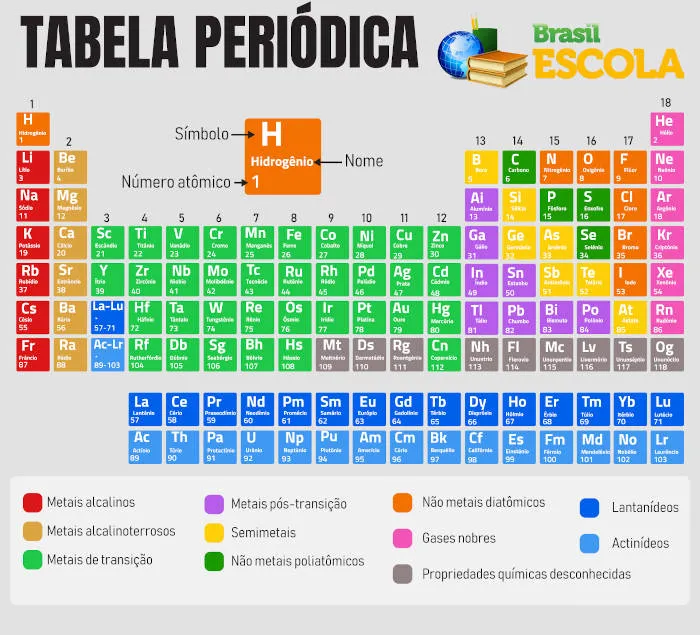
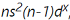
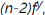

A Tabela Periódica é uma ferramenta de organização dos elementos químicos já descobertos, agrupando-os por semelhança de propriedades físico-químicas e em ordem crescente de número atômico.
A Tabela Periódica é uma ferramenta que tem por objetivo organizar e agrupar todos os elementos químicos já descobertos pelo ser humano. Foi desenvolvida em 1869 pelo químico russo Dmitri Mendeleev, o qual organizou elementos de propriedades semelhantes em grupos e os colocou em ordem crescente de massa. Posteriormente, em 1913, a Tabela Periódica foi aprimorada pelo físico inglês Henry Moseley, depois de seu método de determinação dos números atômicos. Dali em diante, os elementos foram colocados em ordem crescente de números atômicos, tomando a forma que hoje conhecemos. Em comemoração aos 150 anos da criação da Tabela Periódica, a Organização das Nações Unidas decretou o ano de 2019 como o Ano Internacional da Tabela Periódica.
- A Tabela Periódica organiza todos os elementos já descobertos pelos seres humanos.
- Os elementos químicos são colocados em ordem crescente de número atômico.
- Nas suas colunas, chamadas de grupos, estão os elementos com propriedades físico-químicas
semelhantes.
- Nas suas linhas, chamadas de períodos, está indicada a camada eletrônica mais energética
do
elemento.
- A Tabela tem várias subdivisões, diferenciando os elementos em metal ou ametal,
representativos ou de transição, além de subdividi-los de acordo com sua distribuição
eletrônica.
- A Tabela Periódica foi desenvolvida pelo químico russo Dmitri Mendeleev, em 1869, e foi
sendo aprimorada ao longo dos anos até sua forma atual.
Video aula sobre a Tabela Periódica
A Tabela Periódica tem grande utilidade porque consegue estabelecer padrões de
organização
para todos os elementos químicos descobertos pela humanidade até então.
Atualmente são 118
elementos químicos, os quais são dispostos na Tabela em ordem crescente de números atômicos,
da esquerda para a direita, iniciando no hidrogênio (número atômico igual a 1) e terminando
no recém-incluído oganessônio (número atômico igual a 118).
Contudo, a grande vantagem da Tabela Periódica é colocar elementos de propriedades
físico-químicas semelhantes na mesma coluna. As colunas da Tabela podem ser chamadas de
grupos ou família. Já as linhas, que dispõem os elementos em ordem crescente de
número
atômico, são chamadas de períodos.
A Tabela Periódica conta com 18 linhas verticais (ou colunas), as quais
podem ser chamadas
de famílias ou grupos. Em cada coluna, estão dispostos elementos de propriedades
físico-químicas semelhantes. A única exceção é o elemento químico hidrogênio,
que, apesar de
estar no grupo 1, não possui propriedades semelhantes aos demais.
Podemos citar os elementos de uma família apenas falando seu número, como família (ou grupo)
1 ou família (ou grupo) 2, ou então citando o nome do seu primeiro elemento, como família
(ou grupo) do ferro, família (ou grupo) do carbono.
Contudo, alguns grupos trazem nomes famosos, criados antes do desenvolvimento da Tabela
Periódica. São eles:
- Metais alcalinos (grupo 1, com exceção do hidrogênio)
- Metais alcalino-terrosos ou alcalinos terrosos (grupo 2)
- Pinictogênios (grupo 15)
- Calcogênios (grupo 16)
- Halogênios (grupo 17)
- Gases nobres (grupo 18)
Ainda se difunde bastante a separação dos grupos em A e B. Contudo, a União
Internacional da
Química Pura e Aplicada (Iupac) não recomenda mais a utilização dessa separação, devendo-se
utilizar então os números 1 até 18 para representar as famílias ou os grupos. Isso porque a
Iupac utilizava as letras A e B para separar o lado esquerdo (A) do lado direito (B) da
Tabela, usando os grupos de ferro, cobalto e níquel como fronteira.
Contudo, o sistema americano CAS utilizou a letra A para indicar elementos representativos e
a letra B para indicar elementos de transição. Consequentemente, essas denominações
trouxeram muita confusão, e a Iupac interviu para sanar esse problema.
Também tem não se recomenda mais a utilização do termo família como sinônimo de
grupo,
contudo, essa associação ainda é muito difundida em materiais didáticos e por isso foi
citada.
Os períodos são as linhas horizontais na Tabela Periódica e colocam os
elementos em ordem
crescente de número atômico. Atualmente, a Tabela conta com sete períodos, ou
seja, do primeiro
ao sétimo. Eles indicam em qual camada está o elétron mais energético do
elemento químico
correspondente.
Um detalhe importante é acerca dos lantanídeos e actinídeos. O lantânio,
La, número atômico 57,
pertence ao sexto período da Tabela Periódica, estando na família 3 (do escândio, Sc). Os
outros
14 elementos que vêm após ele, do cério (Ce, número atômico 58) ao lutécio (Lu, número
atômico
71), são chamados de lantanídeos.
Assim como o actínio (Ac, número atômico 89) encontra-se no sétimo período, na
família 3 também,
os outros 14 elementos que vêm após ele, do tório (Th, número atômico 90) até o laurêncio
(Lr,
número atômico 103), são chamados de actinídeos. Teoricamente a Tabela Periódica deveria se
estender horizontalmente para agrupar tanto os lantanídeos quando os actinídeos, contudo,
para
melhor visualização, a ela é geralmente encurtada, colocando essas duas séries
embaixo dela.
Também existem outras divisões na Tabela Periódica, como a distribuição em
metais e ametais.
Antigamente existia a subclasse dos semimetais ou metaloides, contudo, a
Iupac deixou de
utilizar essa subclasse, dividindo os elementos participantes entre metal e ametal.
A divisão entre elementos representativos e de transição ainda se mantém.
Contudo, algo
geralmente pouco lembrado entre os estudantes é que os representativos são apenas os
elementos
dos grupos 1, 2, 14, 15, 16, 17 e 18, excluindo-se o hidrogênio. Já os elementos de
transição
são os dos grupos 3 ao 11, excetuando-se o grupo 12.
Isso porque a definição de elemento de transição indica que tal elemento deve possuir um
subnível d incompleto ou formar cátion com subnível d incompleto. Todos os elementos do
grupo 12
possuem subnível d completo (d10) e, ao formarem cátions (sempre bivalentes), mantêm o
subnível
d completo. Contudo, alguns autores mantêm os elementos do grupo 12 entre os elementos de
transição. Há, ainda, a subdivisão de elementos de transição interna (lantanídeos e
actinídeos)
e externa (demais elementos de transição).
Também se utiliza a distribuição eletrônica para separar os elementos da Tabela Periódica.
- Os grupos 1 e 2, além do hélio (He), pertencem ao bloco s, pois
possuem subnível s como
subnível de valência.
- Os grupos 13 a 18 pertencem ao bloco p, pois possuem esse subnível
como subnível de
valência.
- Os grupos 3 a 12 contemplam o bloco d, pois esses elementos
terminam sua configuração
eletrônica sempre em , em que
n é o número do período do elemento e x é o número
de elétrons no subnível d.
- Já os lantanídeos e actinídeos fazem parte do bloco f, pois eles
terminam a configuração
sempre em ns²(n-1)d¹, em que
n é o número do período do elemento e y é o número de
elétrons no subnível f.
Uma das grandes vantagens da Tabela Periódica são as propriedades periódicas. Quando
organizamos os elementos tal como fizeram Mendeleev ou Moseley, percebemos que ocorre uma
periodicidade dessas propriedades, o que quer dizer que elementos com propriedades
semelhantes se repetem regularmente.
São propriedades periódicas:
- Raio atômico: é uma propriedade utilizada para dimensionar o tamanho dos
átomos. Quanto mais
à esquerda e mais abaixo, maior o raio do elemento. Assim, o frâncio (Fr) é o elemento de
maior raio. Contudo, os elementos do quinto e sexto períodos do bloco d possuem raios
semelhantes, por conta de um efeito que ocorre nos lantanídeos chamado de contração
lantanídica ou contração lantânica. Tal fenômeno, causado pela menor eficiência de blindagem
dos subníveis f, faz com que haja um decréscimo no raio atômico do cério (Ce) ao lutécio
(Lu), fazendo com que elementos como prata (Ag) e ouro (Au) ou paládio (Pd) e platina (Pt)
tenham raios atômicos de tamanhos semelhantes.
- Energia (ou potencial) de ionização: é a energia necessária para se
retirar um elétron de
valência de um átomo isolado no estado gasoso. Quanto menor for o átomo, mais difícil será a
retirada do elétron de valência, pois mais próximo ao núcleo estará esse elétron.
- Afinidade eletrônica ou eletroafinidade: é a variação de energia quando
um elétron se liga a
um átomo isolado na fase gasosa. Caso muita energia seja liberada nesse processo, isso
significa que o átomo tem grande afinidade ou atração por elétrons. De modo geral, átomos
menores têm maior afinidade eletrônica.
- Eletronegatividade: a habilidade de um átomo em atrair elétrons para si
em uma ligação
química. Quanto menor o átomo, maior a eletronegatividade.
- Densidade: o elemento mais denso da Tabela Periódica é o ósmio (Os),
assim, a densidade dos
elementos aumenta quanto mais próximos do ósmio eles estão. A densidade não faz referência à
massa do átomo dividida por seu raio atômico, mas sim à sua substância simples mais
estável.
- Pontos de fusão e ebulição: o elemento de maior ponto de fusão é o
tungstênio (W), enquanto
o de maior ponto de ebulição é o rênio (Re). Quanto mais próximo o elemento for desses
átomos, maiores serão seus pontos de fusão e ebulição. A única exceção são os metais
alcalinos e alcalino-terrosos, cujos pontos de fusão e ebulição aumentam com a diminuição do
tamanho do átomo.
Embora a criação da Tabela Periódica seja creditada a Dmitri Mendeleev, o químico russo foi
bastante influenciado por diversos cientistas.
Antoine-Laurent Lavoisier, na sua célebre obra Tratado elementar de química,
de 1789,
listava 33 elementos, gases, metais, não metais e elementos terrosos.
Posteriormente,
Lavoisier retirou alguns desses elementos, classificando-os como compostos, assim como
retirou a luz, que não fez mais parte dessa classificação. Contudo, 25 dos elementos de
Lavoisier se encontram na Tabela Periódica atual.
Posteriormente, Johann Wolfgang Döbereiner apresentou, em 1817, a chamada lei das
tríades,
em que agrupava trios de elementos de acordo com suas propriedades químicas, de modo que o
elemento do meio tivesse uma massa atômica que fosse aproximadamente a média aritmética dos
outros dois.
Em 1862, Alexandre-Émile Béguyer de Chancourtois desenvolveu a
classificação tridimensional
conhecida como parafuso telúrico, em que organizava os elementos em uma hélice e em ordem
crescente de massa atômica. Fato é que Chancourtois percebeu propriedades periódicas em seu
agrupamento, porém o geólogo teve dificuldade na difusão de suas ideias, não só pelo fato do
modelo ser tridimensional, mas também por sua linguagem ser diferente da comumente utilizada
pelos químicos.
A lei das oitavas surgiu posteriormente, proposta por John Newlands, em
1863. Newlands
organizou os elementos de propriedades semelhantes em 11 grupos, e, além disso, tais
propriedades se repetiam após oito elementos. O nome oitavas faz referência às oitavas
musicais.
Embora, inicialmente, seu trabalho tenha sido considerado vago e confuso, posteriormente
Newlands foi premiado por ele, em 1887, ao receber a Medalha Davy da Real Sociedade de
Londres. Contudo, tais modelos sempre apresentavam lacunas e não conseguiam abranger todos
os elementos já conhecidos.
Foi então que, em 1860, no Congresso de Karlsruhe, 129 químicos se reuniram
para padronizar
formas de nomear e conceituar os conteúdos de pesquisas químicas, diferenciando termos como
átomo e molécula. Stanislao Cannizzaro, um dos palestrantes do congresso, apresentou um
estudo sobre um novo sistema de massas atômicas, entregando cópias de seu artigo aos
presentes.
Dmitri Mendeleev e Julius Lothar Meyer estavam entre os presentes, e então receberam uma
cópia do trabalho de Cannizzaro. Por meio das ideias deste, Meyer desenvolveu uma
Tabela com
28 dos 56 elementos já conhecidos e, em 1868, trabalhou em uma Tabela Periódica
que incluía
todos os elementos químicos conhecidos. Em 1869, contudo, Mendeleev publicou então
sua
Tabela Periódica.
Sem dúvida alguma, a proximidade das publicações gerou conflitos, tanto que, em
1892, a Real
Sociedade de Londres premiou ambos com a Medalha Davy. Contudo, a Tabela de
Mendeleev
vigorou, pois previa a existência de elementos ainda não descobertos, deixando espaços
vazios, e, além disso, ao incluir elementos conhecidos e desconhecidos, levava em
consideração diversas propriedades físicas e químicas, podendo, inclusive, antever quais
seriam as propriedades dos elementos a serem descobertos.
Contudo, a Tabela Periódica de Mendeleev é um instrumento de pesquisa e aberta a
constantes
revisões. O próprio Mendeleev realizou alterações posteriormente ao incluir um
oitavo grupo,
que ele chamou de elementos de transição, por conta de uma quebra de periodicidade
acarretada pela inclusão do ferro. William Ramsay, no final do século XIX,
acrescentou à
Tabela os gases nobres, enquanto Alfred Werner deu a ela uma cara mais
próxima da que
conhecemos ao incluir o bloco d, formando uma série de
transição.
Os trabalhos de Henry Moseley, em 1913, rearranjaram a Tabela Periódica,
uma vez que ele
enunciou a lei periódica, afirmando que “as propriedades físicas e químicas dos elementos
são funções periódicas de seus números atômicos”. Criou-se então o conceito de número
atômico, em que cada elemento teria seu próprio número, fazendo com que a Tabela agora fosse
organizada em ordem crescente de números atômicos.
Os trabalhos de Moseley tiraram as últimas lacunas de Mendeleev. Após isso, na década de
1950, McMillan e Seaborg descobriram os elementos transurânicos, aqueles com número atômico
maior que 92, reconfigurando a Tabela Periódica e, assim, incluindo os lantanídeos e
actinídeos.
Desde então, a Tabela Periódica sofre pequenas inclusões de alguns elementos que vão
sendo
descobertos, sendo o último a ser incluído o elemento 118, oganessônio (Og),
com os
elementos tenesso (Ts), moscóvio (Mc) e nihônio (Nh).
Quem determina a estrutura oficial e padrão da Tabela Periódica atualmente é a Iupac, assim
como é esse órgão que regulariza as mudanças que ela deve sofrer.
- Mendeleev previu a existência de elementos ainda não descobertos bem como suas
propriedades. Foi o caso do germânio (Ge), o qual ele chamou de eka-silício.
- J é a única letra do alfabeto que não está presente na Tabela Periódica.
- Diz-se que Mendeleev buscou inspiração no jogo Paciência para montar sua Tabela Periódica.
O Guiness Book coloca o plutônio (Pu) como o elemento mais perigoso da Tabela Periódica, uma
vez que é altamente radioativo e é utilizado na confecção de bombas atômicas.
- A versão original da Tabela de Mendeleev foi perdida.
- Quando o argônio foi descoberto, em 1894, ele não se encaixava em nenhum grupo da Tabela de
Mendeleev. Como consequência, o químico russo negou a existência desse elemento.